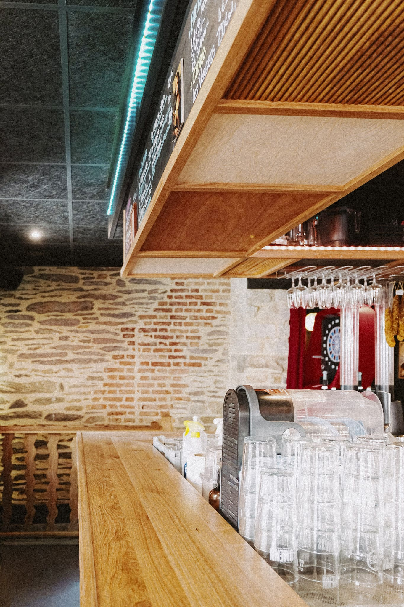
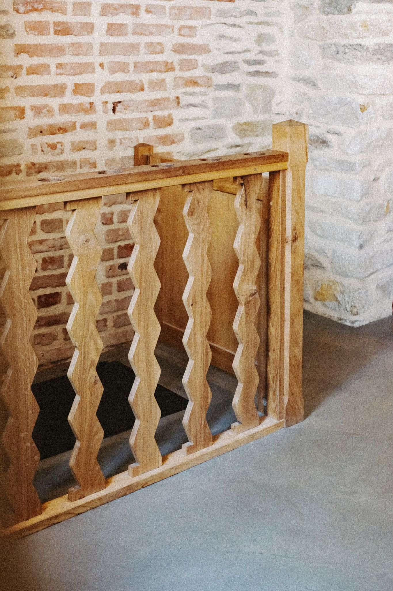

Ponçage et finition sur main courante · Atelier Lanoë · 2025

>Ponçage et finition sur main courante - Atelier Lanoë (Photo Jeanne Dagron) · 2025

>Ponçage et finition sur main courante - Atelier Lanoë (Photo Jeanne Dagron) · 2025